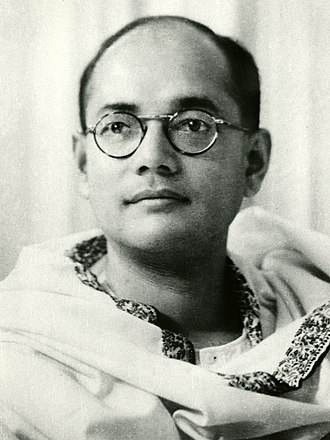

Biography
Subhas Chandra Bose (born c. January 23, 1897, Cuttack, Orissa [now Odisha], India—died August 18, 1945, Taipei, Taiwan?) Indian revolutionary prominent in the independence movement against British rule of India. He also led an Indian national force from abroad against the Western powers during World War II. He was a contemporary of Mohandas K. Gandhi, at times an ally and at other times an adversary. Bose was known in particular for his militant approach to independence and for his push for socialist policies.
Born: January 23, 1897
Died: August 18, 1945
Images

Bose in color

Bose in 1939
Quote
"Give me blood, and I shall give you freedom!"
Subash Chandra Bose